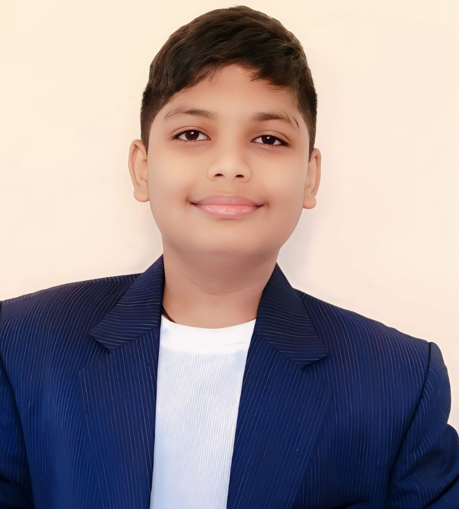

Ritvik Garasangi
Computer Engineer
Profile Summary
I am a motivated and enthusiastic Computer Engineering student with a strong foundation in software development and programming. Proficient in Java, C++, Python, and web technologies, I enjoy solving complex problems and thrive in team environments.
Skills
- Web Development
- Programming (Java, C++, C)
- Database Management
- JavaScript
Education
- St. Vincent’s High School (2012–2024) - SSC Board – 88.20%
- Cusrow Wadia Institute of Technology (2024–2027) - Diploma in Computer Engineering – 90%
Experience
Web Developer Intern at GKD619 (July 2026 – August 2026)
- Developed and maintained web applications.
- Collaborated on new features and bug fixes.
- Used HTML, CSS, JavaScript, and frameworks.
- Participated in Agile sprints and planning.
- Performed code reviews and quality checks.
- Gained hands-on experience with modern web tools.